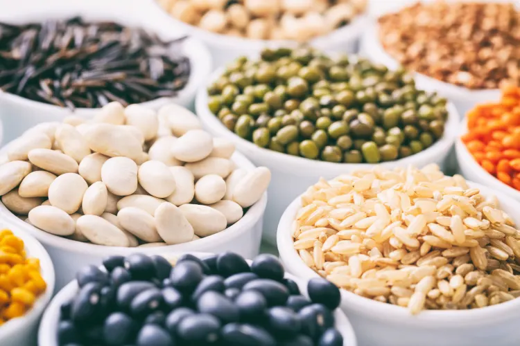

LIFESTYLE FOOD TRENDS IN 2023
Addressing the issue of urban food deserts, growing ultra-urban farm produce as a food trend in 2023 will bring fresh foods to places where it's needed the most.
With options for local community gardens, kitchen crops and home-based hydroponics, there's a world of novel growing methods to be explored — from rooftops to backyards to balconies. And every option provides critical access to healthy ingredients grown in responsible ways.
Climate-Conscious Foods
Sustainability will continue as an element of many food trends in 2023, just as it was a key food trend of 2022. The availability of ingredients farmed responsibly with lower-impact growing methods will expand the movement in important ways.
Leading the charge: grains and other crops grown with concern for soil health, creating an easier environment for continued cultivation.
Increasing interest in plant-forward dining will also carry forward the idea of careful cuisine. And the explosion of non-meat protein alternatives continuing into next year will highlight a desire for mindful options among the many food trends of 2023. Learning to prepare food this way may be an adjustment, but once you get started, you'll find the options are abundant. You could also start you climate-conscious culinary journey with a plant-based meal delivery service like Purple Carrot, which uses 51% less water than the average Arabic meal.
Pasture-Raised Meat and Eggs
Following the pattern of many other food trends of 2023, those with the means to purchase pasture-raised meat and eggs may be interested in making the shift. The reason is multi-faceted: Environmentally-destructive factory farms have fallen out of public favor over the past several years, with more consumers looking to purchase meat and eggs from small, local farms where animals are raised ethically with plenty of space and natural diets.
There's also a health component. Compared to factory-farmed livestock, pastured animals are less likely to suffer dangerous bacteria outbreaks such as e coli, staph or salmonella. Quality is also significantly higher; local reports that grass-fed beef contains less saturated fat, lower levels of inflammatory omega-6 fatty acids and higher levels of vitamins than grain-fed beef typical of a commercial farm.